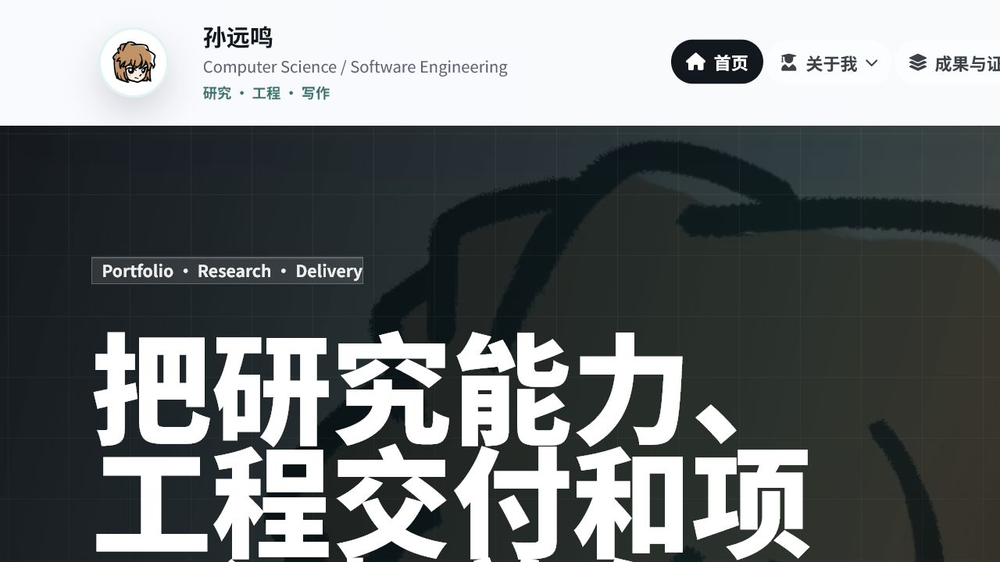
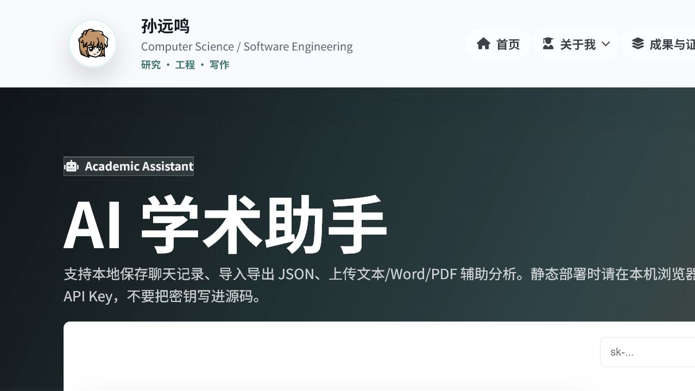
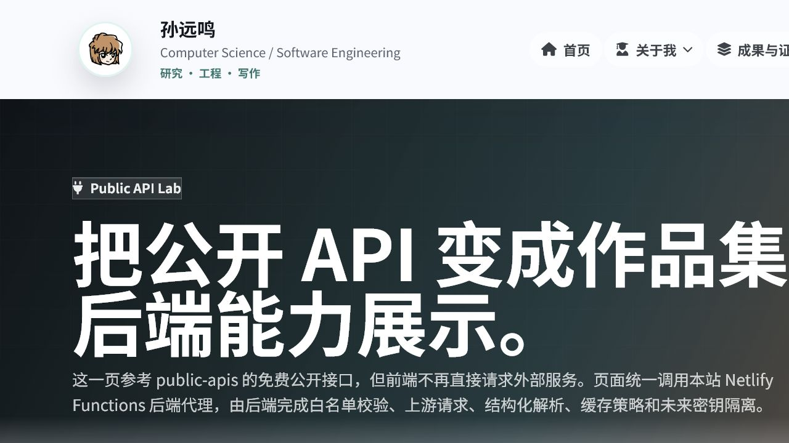
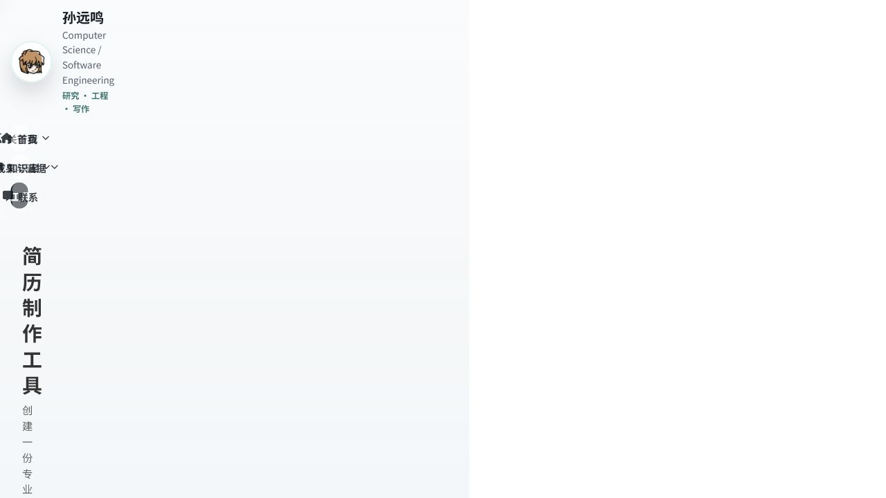
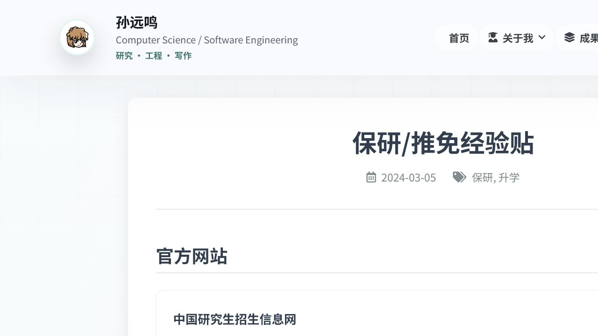

Portfolio System
个人展示站首页重构
展示首屏视觉、导航结构、研究/工程/写作定位和 Netlify 静态站整体完成度。
工程项目不再只靠文字描述，每个重点项目都补充真实页面截图，方便面试官、导师或合作方快速看到可运行界面和产品完成度。

展示首屏视觉、导航结构、研究/工程/写作定位和 Netlify 静态站整体完成度。

呈现文件解析、会话组织、前端状态管理和 API Key 安全边界相关能力。

把公开 API 接入、后端代理、失败原因查询和页面嵌入能力做成可演示模块。

用结构化表单和预览界面承载求职/申博材料整理，补足简历外的细节展示。

把经验文章、资料入口和流程型内容整理成长期可维护的知识资产页面。
每个项目按场景、职责、技术和产出组织，不只列技术名词，而是让访问者能看到完整工作链路。
页面结构、状态管理、组件复用、路径治理和静态构建共同构成项目的工程可信度。
Public API 实验室和 Netlify Functions 代理展示了接口白名单、失败原因、缓存和密钥边界意识。
工程项目不止能跑，还要能公开访问、能持续更新、能被链接检查和构建脚本稳定验证。